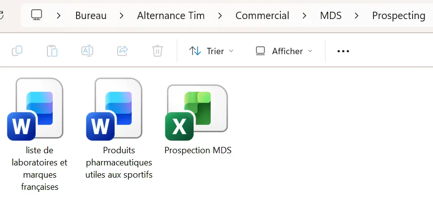

Tim Agoune
Tim Agoune01Objectif
Structurer la démarche commerciale de la marque auprès de sa cible — les laboratoires pharmaceutiques et les marques qui s'adressent aux sportifs — pour développer les recettes publicitaires et les partenariats.
02Démarche
Pour ce type de mission, je commence par étudier le secteur afin d'identifier les annonceurs potentiels et leurs produits. Je construis ensuite un fichier de prospection qui rassemble les entreprises à contacter, les qualifie et permet de suivre les échanges. Après avoir travaillé sur l'audience des revues côté marketing, cette mission m'a fait travailler la partie commerciale : la vente d'espaces publicitaires et de partenariats aux annonceurs.
03Moyens et outils
- Fichier de prospection structuré sur Excel : identification, qualification, suivi ;
- supports de présentation commerciale ;
- grilles tarifaires print & web du groupe.
